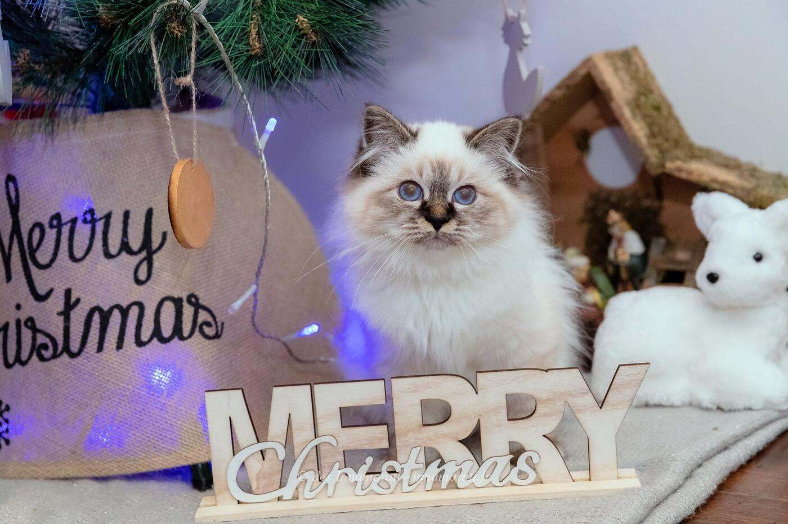

RobeFemelle · Seal tabby point
Naissance7 août 2018
StatutAdoptée retraitée
Album10 photos, de décembre 2018 à décembre 2019


Photos réduites et marquées. Elles appartiennent à la Chatterie des Innamorati et ne peuvent pas être reprises dans une annonce.